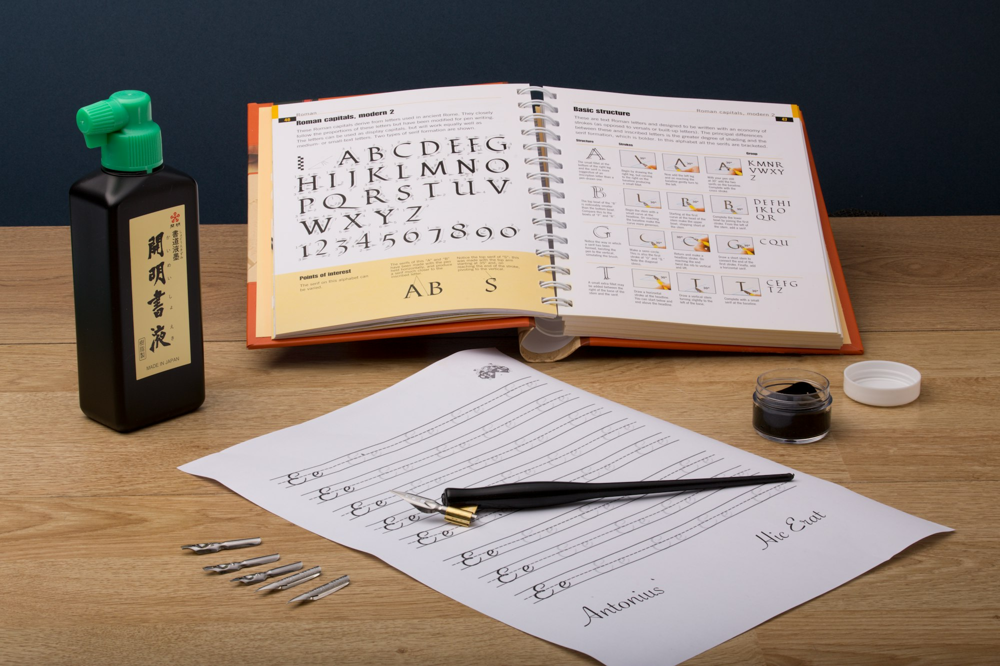

Niyama · The Ninth Observance · 09
Svádhyáya
Clear understanding
Not the words on the page, but the meaning behind them. To grasp the idea first is the whole discipline.
The word
Reading is not understanding.
What it became
The shortcut
Touch your head with the book three times. Offer fruits or sweets to the deity. No time to read, no need to grasp the meaning — this, the religious professionals say, will yield the same result. The crude reading, sold as the real thing.
What it means
Svádhyáya
Not only to read or hear a spiritual subject, but to understand its significance — the underlying idea. In the hermitage of the rśis a student carried it on day by day. The word survived; its meaning thinned out.
Accepting the outward meaning has only led to the corruption of sádhaná and the distortion of belief.
How a meaning gets buried
One aspect of tantra is called máṃsa sádhaná.
The interpreters dominated by their material desires read the word at its crudest. Máṃsa as flesh. So they slaughter goats at the altar in its name — the number to be sacrificed fixed by the number of people who will eat the meat. The teaching becomes the opposite of itself. Alas, what an interpretation.
máṃsa · the same word
The crude reading
Meat. The slaughter of innocent goats.
Taken at face value, fed by appetite, dressed as devotion.
The true reading
Control over the tongue.
Ma means tongue; máṃsa, the action of the tongue — vocal expression. The máṃsa sádhaka takes it daily: he practises control over his speech. How beautiful the meaning is.
One word, two meanings
The same word carries different meanings in different contexts.
सुरालय
Shaoṇḍikaḥ surálayaṃ gacchati
The liquor merchant goes to the surálaya.
Here surálaya is the house of surá — the liquor shop. The word means exactly what the speaker around it makes it mean.
सुरालय
Nárada surálayaṃ gacchati
Nárada goes to the surálaya.
The very same surálaya is now the abode of the surá — the gods. Heaven. Change the context and the word turns inside out.
So the idea is to be grasped first. Otherwise the proper spirit will never be realized.

Why it is kept hidden
Those with vested interest keep the public away.
Away from the true spirit of the true shástras — because a public that cannot read the meaning for itself is a public that can be exploited. The defence is not faith. It is comprehension. See how cautious you have to be.
Where it leads
Read for the idea, and the text comes alive.
Svádhyáya frees the scriptures from those who profit by misreading them, and clears the mind to receive what they actually hold. It is the understanding that Tapah turns into service, and the lucid step before Iishvara Prańidhána — taking shelter in the Cosmic with open eyes.
A Guide to Human Conduct · after Shrii Shrii Ánandamúrti